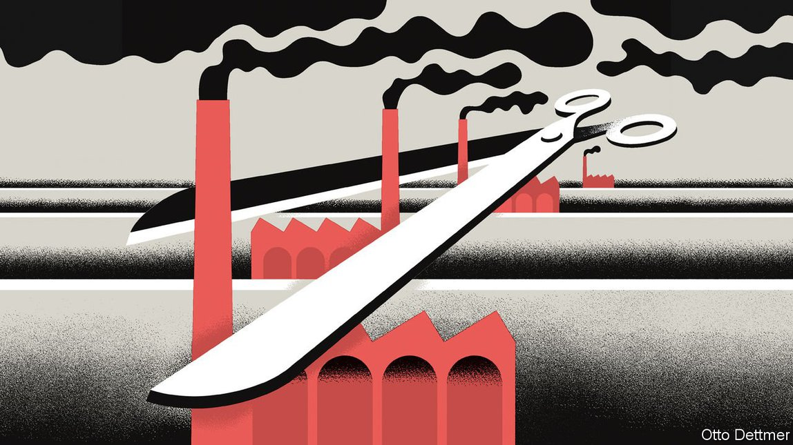

Text
2021-07-25T14:12:59+00:00
Free exchange
自由交流
自由交流
The EU proposes a carbon tariff on some imports
欧盟提议对部分进口商品征收碳关税
歐盟提議對部分進口商品徵收碳關稅
The effort could prove an instructive example for others—or a cautionary tale
这项努力可以成为值得其他地区借鉴的范例——也可能沦为警世故事
這項努力可以成為值得其他地區借鑒的範例——也可能淪為警世故事
WHEN THE European Union established its cap-and-trade scheme for pricing carbon emissions in 2005 it faced a tricky design problem. Making polluting firms buy permits puts them at a disadvantage in global markets. Companies might respond to the scheme by moving their dirty activities offshore, causing “carbon leakage”. And if producers in places with lax environmental standards outcompeted European firms, global emissions would go up. The EU solved the problem by offering subsidies and free pollution permits to some dirty industries exposed to trade.
当欧盟在2005年制定“限额与交易”（cap-and-trade）这一碳排放定价机制时，它面临一个棘手的设计问题。令污染企业购买排污许可会让它们在全球市场上处于劣势。企业应对这个机制的办法可能是把污染严重的经济活动转移到海外，结果导致“碳泄漏”。而如果位于环境标准宽松的地区的生产商在竞争中胜过了欧洲企业，全球排放量就会上升。对此，欧盟的解决方法是向一些参与贸易的污染行业提供补贴和免费排放许可。
當歐盟在2005年制定“限額與交易”（cap-and-trade）這一碳排放定價機制時，它面臨一個棘手的設計問題。令污染企業購買排污許可會讓它們在全球市場上處於劣勢。企業應對這個機制的辦法可能是把污染嚴重的經濟活動轉移到海外，結果導致“碳泄漏”。而如果位於環境標準寬鬆的地區的生產商在競爭中勝過了歐洲企業，全球排放量就會上升。對此，歐盟的解決方法是向一些參與貿易的污染行業提供補貼和免費排放許可。
Those handouts, however, have always had a target on their back. On July 14th EU officials set out a plan to phase them out and replace them with a “carbon border-adjustment mechanism” (CBAM). Between 2025 and 2035, producers of aluminium, cement, fertilisers and steel will gradually lose their subsidies. But importers of these goods will have to buy a new category of pollution permit. How many they need will depend on the amount of carbon estimated to have been emitted during the production of the goods. The policy is in effect a tariff, intended to compensate for the fact that foreign firms may face no carbon price, or one that is lower than Europe’s.
然而，这类补贴一直引致批评。7月14日，欧盟官员制定了一项计划来逐步停止补贴，代之以“碳边境调整机制”（carbon border-adjustment mechanism，简称CBAM）。2025年至2035年间，铝、水泥、化肥和钢铁生产商将慢慢失去补贴。但这些商品的进口商将必须购买一类新的排污许可。至于购买多少将取决于商品生产过程中估算的碳排放量。这项政策实质上是一种关税，旨在对一个情况做出补偿：外国公司可能不需要负担碳价，或者需要支付的碳价低于欧洲。
然而，這類補貼一直引致批評。7月14日，歐盟官員制定了一項計劃來逐步停止補貼，代之以“碳邊境調整機制”（carbon border-adjustment mechanism，簡稱CBAM）。2025年至2035年間，鋁、水泥、化肥和鋼鐵生產商將慢慢失去補貼。但這些商品的進口商將必須購買一類新的排污許可。至於購買多少將取決於商品生產過程中估算的碳排放量。這項政策實質上是一種關稅，旨在對一個情況做出補償：外國公司可能不需要負擔碳價，或者需要支付的碳價低於歐洲。
The switch will please those who suspect that subsidies have blunted the impact of carbon prices. In theory free permits do not affect the incentive to reduce emissions, because at the margin the financial reward for doing so is the same: firms that get greener can sell their surplus entitlements. In practice the freebies have sapped ambition. Michael Grubb of University College London points out that companies know that if they sell their permits today, they might receive fewer handouts in future. Compared with the industries that have received support, the power sector, which has not, has decarbonised more quickly. Victoria Irving of Morgan Stanley, a bank, says that some subsidised polluters have made green investments, but “they have a long way to go”. Withdrawing the subsidies without a new scheme would bring back the danger of leakage.
这一变化会让那些质疑补贴削弱了碳价影响的人感到高兴。理论上讲，免费许可不会影响企业减排的动力，因为这么做的边际财务回报是相同的：变得更环保的公司可以把自己多余的许可卖给别人。但在实际操作中，这些免费馈赠削减了减排的雄心。伦敦大学学院的迈克尔·格鲁布 (Michael Grubb) 指出，企业知道如果它们今天把许可卖掉，将来收到的补助可能会减少。相比获得资助的行业，没有得到支持的电力行业脱碳的速度更快。摩根士丹利的维多利亚·欧文（Victoria Irving）表示，一些拿补贴的污染企业已经展开了绿色投资，但“他们还有很长的路要走”。不推出新的机制就撤回补贴会重新带来“碳泄漏”的危险。
這一變化會讓那些質疑補貼削弱了碳價影響的人感到高興。理論上講，免費許可不會影響企業減排的動力，因為這麼做的邊際財務回報是相同的：變得更環保的公司可以把自己多餘的許可賣給別人。但在實際操作中，這些免費饋贈削減了減排的雄心。倫敦大學學院的邁克爾·格魯布 (Michael Grubb) 指出，企業知道如果它們今天把許可賣掉，將來收到的補助可能會減少。相比獲得資助的行業，沒有得到支持的電力行業脫碳的速度更快。摩根士丹利的維多利亞·歐文（Victoria Irving）表示，一些拿補貼的污染企業已經展開了綠色投資，但“他們還有很長的路要走”。不推出新的機制就撤回補貼會重新帶來“碳泄漏”的危險。
Officials estimate that by 2030 the CBAM and the suite of environmental policies announced alongside it will reduce emissions in the affected sectors by 14%, compared with a scenario in which nothing changes. However, imports would be 12% lower, because tariffs depress trade. Though totemic, the scheme’s scope is relatively small. It would raise about €9bn in revenues in 2030 (although that figure may nearly double once the policy is fully phased in). The carbon embodied in trade flows is typically less than 10% of countries’ total emissions, according to the IMF, and the proposal covers only a handful of sectors. In 2019 the imports in question were worth only €29bn ($33bn, or 1.5% of total trade in goods for the bloc).
官员们估计，相比不做任何改变的情景，到2030年，CBAM以及随之宣布的一系列环境政策将使受影响部门的碳排放量减少14%。但进口将减少12%，因为关税会抑制贸易。虽然该计划具有标志性意义，但它覆盖的范围相对较小。到2030年它将带来约90亿欧元的收入（尽管一旦该政策完全实施，这一数字可能接近翻番）。据国际货币基金组织称，贸易流通中包含的碳通常不到各国总排放量的10%，而且该提案仅涵盖少数几个经济部门。受影响部门2019年的进口总额仅为290亿欧元（330亿美元，占欧盟商品贸易总额的1.5%）。
官員們估計，相比不做任何改變的情景，到2030年，CBAM以及隨之宣布的一系列環境政策將使受影響部門的碳排放量減少14%。但進口將減少12%，因為關稅會抑制貿易。雖然該計劃具有標誌性意義，但它覆蓋的範圍相對較小。到2030年它將帶來約90億歐元的收入（儘管一旦該政策完全實施，這一數字可能接近翻番）。據國際貨幣基金組織稱，貿易流通中包含的碳通常不到各國總排放量的10%，而且該提案僅涵蓋少數幾個經濟部門。受影響部門2019年的進口總額僅為290億歐元（330億美元，占歐盟商品貿易總額的1.5%）。
Tariffs do not have to be large, however, to provoke a response. Perhaps it will be a good one: with the CBAM in place, foreign countries might as well price carbon at home and keep the revenue for themselves (the EU will grant discounts for carbon taxes already paid). As the scope of the CBAM increases, so will other governments feel a greater pull towards pricing emissions. A more likely consequence, however, is a brawl over whether the policy is protectionist. Australia and India, both exporters to the EU, are already grumbling that the tariff could be discriminatory and regressive. In March America warned the EU that border levies should be a “last resort”. It has also said it is considering one of its own despite not pricing carbon itself, other than through an incomplete patchwork of state schemes in which prices are too low.
然而，关税要引发反应并不需要很大的规模。也许它将会是一种积极的反应：CBAM实施后，其他国家或许倒不如在国内制定碳价，自己拿到这笔收入（欧盟将对已支付的碳税给予折扣）。随着CBAM范围扩大，其他政府会愈发倾向于对碳排放定价。不过，一个更可能发生的后果是一场有关这项政策是否是贸易保护主义的争吵。澳大利亚和印度这两个对欧盟出口的国家已经在抱怨这可能是一项不公正和累退的关税。今年3月，美国警告欧盟，边境税赋应是“最后的手段”。它还表示，尽管没有为碳本身定价，它正在考虑推出自己的某种边境税，而不是依靠国内部分州推出价格过低的碳税。
然而，關稅要引發反應並不需要很大的規模。也許它將會是一種積極的反應：CBAM實施後，其他國家或許倒不如在國內製定碳價，自己拿到這筆收入（歐盟將對已支付的碳稅給予折扣）。隨着CBAM範圍擴大，其他政府會愈發傾向於對碳排放定價。不過，一個更可能發生的後果是一場有關這項政策是否是貿易保護主義的爭吵。澳大利亞和印度這兩個對歐盟出口的國家已經在抱怨這可能是一項不公正和累退的關稅。今年3月，美國警告歐盟，邊境稅賦應是“最後的手段”。它還表示，儘管沒有為碳本身定價，它正在考慮推出自己的某種邊境稅，而不是依靠國內部分州推出價格過低的碳稅。
There is also a danger of unintended consequences. Foreign companies could redirect their greenest exports to Europe and send their dirtiest output elsewhere, rather than cutting overall emissions. This phenomenon, dubbed “resource shuffling”, has troubled California, which has a CBAM for its electricity market—the only existing comparable scheme. Firms could also adjust their supply chains to exploit the limited scope of the policy. A carmaker that would have to buy permits to import steel may prefer to buy a car chassis made with steel overseas, to which the CBAM would not apply.
也有出现意外后果的危险。外国公司可以把自己最环保的出口品转到欧洲，把最肮脏的运往别处，而不是减少排放总量。这种被称为“资源洗牌”的现象已经让加州头痛，它的电力市场有一个CBAM机制——现有唯一的类似计划。企业还可以调整自身供应链来利用该政策有限的范围。必须购买排污许可来进口钢材的汽车制造商可能宁愿购买用海外产钢材制成的汽车底盘——CBAM不适用于后者。
也有出現意外後果的危險。外國公司可以把自己最環保的出口品轉到歐洲，把最骯髒的運往別處，而不是減少排放總量。這種被稱為“資源洗牌”的現象已經讓加州頭痛，它的電力市場有一個CBAM機制——現有唯一的類似計劃。企業還可以調整自身供應鏈來利用該政策有限的範圍。必須購買排污許可來進口鋼材的汽車製造商可能寧願購買用海外產鋼材製成的汽車底盤——CBAM不適用於後者。
The risk of such carbon leakage rises in tandem with the carbon price. A study published in January by DIW Berlin, a think-tank, found that a price of €75 per tonne would leave as much as 15% of the EU’s manufacturing vulnerable to being undercut in this way. (European carbon prices are hovering between €50-60 per tonne, and projected to increase.)
这种碳泄漏的风险随碳价的上升而上升。智库德国经济研究所（DIW Berlin）1月发表的研究发现，每吨75欧元的价格将让欧盟高达15%的制造业面临低价竞争。（欧洲碳价目前徘徊在每吨50至60欧元间，预计还会上涨。）
這種碳泄漏的風險隨碳價的上升而上升。智庫德國經濟研究所（DIW Berlin）1月發表的研究發現，每噸75歐元的價格將讓歐盟高達15%的製造業面臨低價競爭。（歐洲碳價目前徘徊在每噸50至60歐元間，預計還會上漲。）
Steel yourself
“钢”强起来
“鋼”強起來
These problems, however, will be reduced to the extent that carbon prices are adopted everywhere. The power of incentives means carbon-intensive production will always try to find its way to where emissions are cheap, but that does not mean it is futile to try to plug all the holes. The best argument for the CBAM is that it is a first step towards a world in which emissions cannot escape carbon prices. Were they sufficiently widespread, the CBAM would be rendered unnecessary.
然而，只要各地都采用碳价，这些问题将减轻。财务激励的强大诱因意味着碳密集型生产会始终试图找到排放更便宜的地方，但这也不是说尝试堵住所有漏洞是白费劲。推出CBAM的最佳理由是它是迈向一个无法逃避碳价的世界的第一步。如果碳价足够普及，CBAM就变得没必要了。
然而，只要各地都採用碳價，這些問題將減輕。財務激勵的強大誘因意味着碳密集型生產會始終試圖找到排放更便宜的地方，但這也不是說嘗試堵住所有漏洞是白費勁。推出CBAM的最佳理由是它是邁向一個無法逃避碳價的世界的第一步。如果碳價足夠普及，CBAM就變得沒必要了。
Long before that happens, though, the EU must overcome opposition to the CBAM at home. One problem is that trade will be adjusted on the way in but not on the way out. Exporters, having lost their subsidies, will still find themselves competing in markets outside Europe’s borders against firms that can ignore the cost of carbon. (Around 8% of the EU’s cement production, and 18% of steel, is exported.) Already some lawmakers in the European Parliament, which must approve the proposal, are calling for border adjustment to exist alongside free permits, punishing foreigners while continuing to shield those at home. Bowing to them would turn a potentially useful policy for fighting climate change into naked protectionism—and an instructive example for other countries into a cautionary tale. ■
不过，在这一天远远没有到来之前，欧盟必须克服欧盟境内对CBAM的反对。一个问题是贸易的调整将只发生在进口环节而不包括出口。失去补贴的出口商仍然会发现自己要在欧洲境外市场上与那些不需要负担碳成本的企业竞争。（欧盟水泥产量的约8%和钢铁的18%都出口境外。）该提案必须获欧洲议会批准，而一些议员已经呼吁让免费许可和边境调整机制双管齐下，在惩罚外国人的同时继续保护本土企业。如果向他们屈服，一项原本可能有效对抗气候变化的政策将沦为赤裸裸的保护主义——把一个值得其他国家借鉴的范本变成一则警世故事。
不過，在這一天遠遠沒有到來之前，歐盟必須克服歐盟境內對CBAM的反對。一個問題是貿易的調整將只發生在進口環節而不包括出口。失去補貼的出口商仍然會發現自己要在歐洲境外市場上與那些不需要負擔碳成本的企業競爭。（歐盟水泥產量的約8%和鋼鐵的18%都出口境外。）該提案必須獲歐洲議會批准，而一些議員已經呼籲讓免費許可和邊境調整機制雙管齊下，在懲罰外國人的同時繼續保護本土企業。如果向他們屈服，一項原本可能有效對抗氣候變化的政策將淪為赤裸裸的保護主義——把一個值得其他國家借鑒的範本變成一則警世故事。